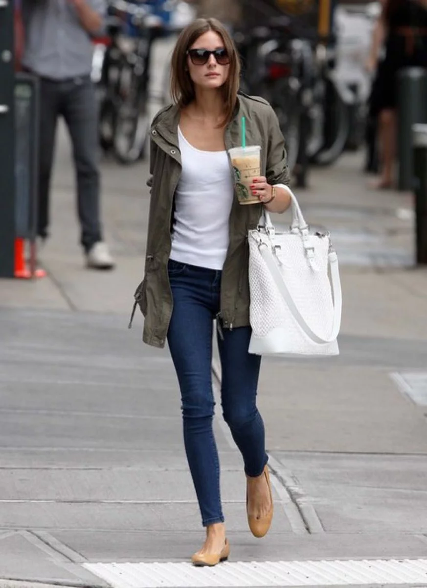
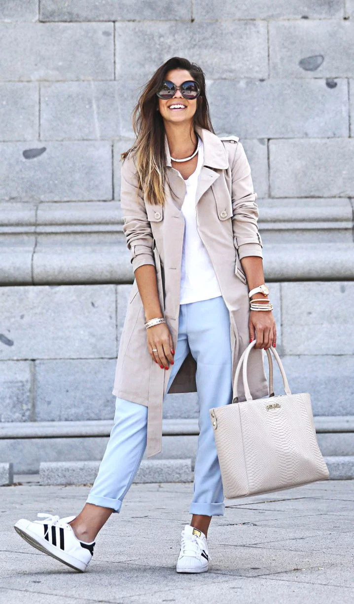
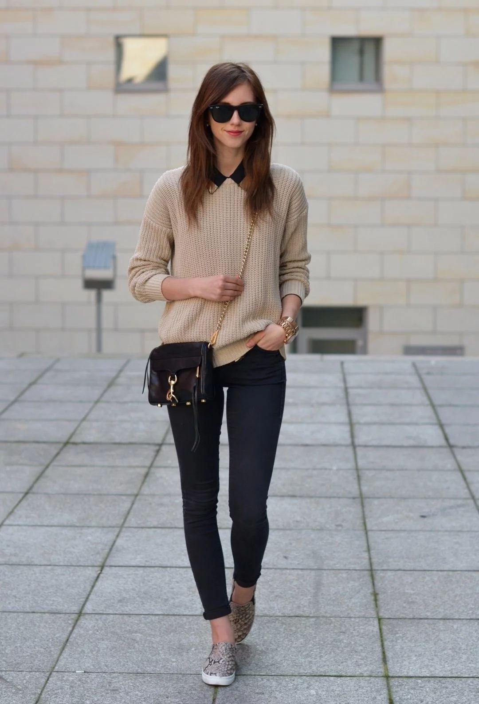

Congratulations! You've picked our Casual wardrobe.
Casual is a combination of elegance with comfort. This simple style has caught up well with the passage of time and is one of the most sought after fashion styles as of now. None of the exotic and bold items will be in the wardrobe of a woman who follows casual fashion. They would prefer to put on a white T-Shirt and black pants over tight and uncomfortable exotics any day.


